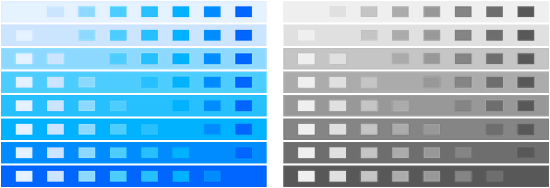

Contents
Summary
The command \comparecolorgroup is to show the colors in a defined color group
Settings
Description
Show a matrix of every colorgroup color on top of every other colorgroup color, in rgb color as well as using greyscale reduction.
Colorgroups are somewhat obsolete, using color palettes directly makes more sense nowadays.
Examples
Example 1
-
\usecolors[dem] % load demo colorgroup definitions \comparecolorgroup [blue]
- 